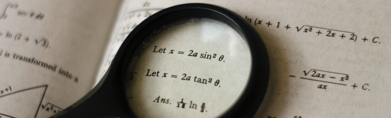

Conteúdos
Números e expressões numéricas
Conjuntos numéricos
As 4 operações básicas
Frações
Decimais e Dízimas periódicas
Notação Científica
Múltiplos, Divisores, antecessores e sucessores
Fatoração
MDC e MMC
Potenciação
Radiciação
Progressões (PA e PG)
Grandezas e Unidades de Medidas
História da matemática

A história da matemática é uma narrativa rica e complexa que abrange milhares de anos e envolve diversas civilizações ao redor do mundo. Vou fornecer um breve resumo das principais etapas dessa história:
1_Pré-história: Os primeiros vestígios de matemática remontam a sociedades pré-históricas, onde os seres humanos começaram a contar e usar noções rudimentares de números e geometria para fins de contagem e medição
2_Egito Antigo: Os egípcios desenvolveram técnicas matemáticas para fins práticos, como medição de terras e construção de monumentos, e utilizaram frações e sistemas numéricos complexos.
3_Mesopotâmia: Os mesopotâmios criaram um sistema de numeração baseado em 60 (sistema sexagesimal) e desenvolveram técnicas de álgebra para resolver equações lineares.
4_Grécia Antiga: Os gregos, notavelmente matemáticos como Pitágoras, Euclides e Arquimedes, contribuíram significativamente para a matemática, estabelecendo os fundamentos da geometria, teoria dos números e trigonometria.
5_Idade Média e Islã: Durante a Idade Média, estudiosos islâmicos como Al-Khwarizmi ajudaram a preservar e expandir o conhecimento matemático da antiguidade. O sistema numérico indo-arábico que usamos hoje foi desenvolvido nessa época.
6_Renascimento e Era Moderna: O Renascimento na Europa trouxe um renascimento do interesse pela matemática, com matemáticos como Leonardo Fibonacci, Johannes Kepler, René Descartes e muitos outros fazendo contribuições importantes para a disciplina.
7_Século XVIII e XIX: Nesse período, a matemática avançou rapidamente com o desenvolvimento do cálculo por Isaac Newton e Gottfried Leibniz, bem como avanços em teoria dos números, geometria e álgebra.
8_Século XX: O século XX testemunhou avanços incríveis em todas as áreas da matemática, incluindo teoria dos conjuntos, lógica matemática, teoria dos números, geometria diferencial e álgebra abstrata. Além disso, o advento dos computadores revolucionou a matemática aplicada e a análise numérica.
Hoje, a matemática é uma disciplina fundamental em ciência, tecnologia, engenharia e muitos outros campos, desempenhando um papel essencial no avanço da sociedade em várias frentes. A história da matemática é uma história de inovação, descoberta e evolução contínua.